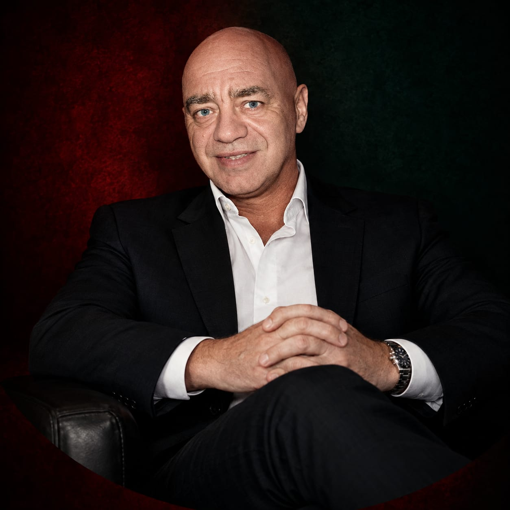

Psicología · Filosofía · Un proyecto de Juan Carlos Feole
Bautismo de las creencias
Cambiamos de personas, de lugares y de circunstancias, y aún así volvemos a encontrarnos con conflictos muy parecidos. Este proyecto busca extirpar las creencias erróneas que están detrás de esas repeticiones, para así sanar y poder dar paso al fluir del Yo superior, tu verdadero propósito en la vida.
«¿Qué se repite en mi vida? ¿Por qué?» Quizás no sea solo casualidad, sino que llevamos un trauma arraigado dentro nuestro que busca sanar. Juan Carlos Feole
La presentación
Hay situaciones traumáticas que no se quedan en el pasado.
En este video, Juan Carlos Feole explica cómo una experiencia que supera nuestra capacidad de elaboración deja una carga emocional que queda aferrada a nuestra vida. Esa carga se vuelve una creencia, y la creencia nos lleva a repetir el mismo sufrimiento, tengamos veinte o cuarenta años.
La propuesta es resolver esa creencia, extirpándola, para que las situaciones del presente dejen de cargar con el peso traumático del pasado.
Cómo se repite una historia
-
La experiencia
Una situación supera nuestra capacidad de elaboración y se vuelve traumática. Tiene dos aspectos: la foto de lo que pasó y su carga emocional.
-
La creencia
Esa carga emocional queda aferrada y se transforma en una creencia que repetimos sin darnos cuenta.
-
La repetición
La creencia nos lleva otra vez hacia situaciones que nos hacen sufrir, aunque cambiemos de personas, de lugares o de circunstancias.
-
La resolución
Al reconocer y extirpar esa creencia, el presente deja de cargar con el peso traumático del pasado y podemos sanar.
El proyecto
El libro: El bautismo de las creencias
La base teórica y práctica del bautismo de las creencias: una propuesta psicológica y filosófica sobre cómo las experiencias que nos marcaron se vuelven creencias, cómo esas creencias nos llevan a repetir las mismas historias, y cómo resolverlas.
Próximamente se publicará.
Más allá del libro
El bautismo de las creencias lleva estas ideas a la vida, a través de videos, publicaciones, charlas y talleres presenciales, y consultas privadas, para que quienes se encuentran en un ciclo traumático repetitivo puedan sanar.
Juan Carlos Feole
Psicólogo clínico y pensador, con más de 40 años de experiencia atendiendo pacientes individuales, manejo de grupos, dando charlas y talleres, y consultoría en empresas.
Seguilo en Instagram →¿Alguna vez sentiste que estabas viviendo una historia que ya habías vivido antes?
Juan Carlos Feole lee los comentarios y mensajes en Instagram.
Contáselo en Instagram